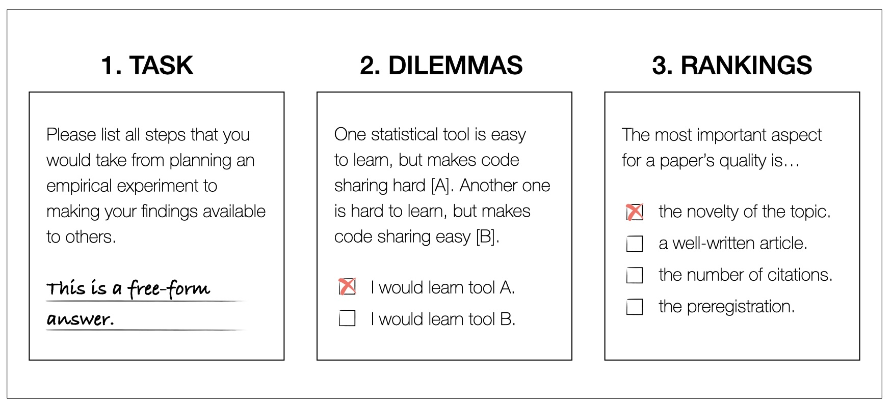

Psychology students' attitudes and preferences towards Open Science
Open Science as a remedy for the replication crisis
Starting from the 2010s, psychology discovered that a substantial amount of the effects discovered in the discipline do not replicate, meaning repeated experiments reached different conclusions. Replications are essential for the cumulative nature of, as well as the trust in science.
The term replication crisis refers to the fact that many psychological effects are not found in repeated experiments.

(A screenshot of the Replication Database collecting psychological effects along their replication attempts.)
As a reaction to the replication crisis, psychology developed Open Science principles, among them sharing data, code, and materials openly, as well as having unrestraint access to scientific literature and the peer review process.
Open Science is said to be a remedy for the replication crisis and many researchers started adopting Open Science principles.
An understudied population: Bachelor and Master students in psychology
While Open Science becomes increasingly popular in the social science community, we only know little about how Open Science is integrated into psychological curricula. Investigating student samples is crucial, since today's students are tomorrow's researchers. Open Science is supposed to be a natural part of the research process as opposed to something separate or nice to have.
A new measurement for the 'Preferences and Attitudes Towards Open Science in Students' (PATOS-S)
Our study investigates the attitudes towards Open Science in psychology students on the bachelor and master level. Therefore, we developed a new instrument, PATOS-S.
Our questionnaire to assess students' Open Science attitudes consists of open-ended questions, dilemmas and rankings to circumvent disadvantages of traditional self-report scales.

Other than common self-report scales, our questionnaire consists of three parts (see image): (1) and open-ended situational judgement questions, (2) dilemmas, in which students are supposed to choose between open and traditional science practices, and (3) rankings, in which students are supposed to rank certain scientific aspects for their importance.
The project is in the stage of a registered report stage one. We plan to collect data in seven different countries, with information about the academic environment of the students as predictors of Open Science adoption.